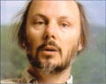
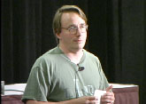
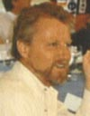
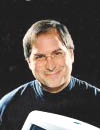
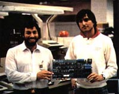

with President Clinton
the day he received
the National Medal
of Technology
for creating C.
See more at c.html
Bjarne Stroustrup
see more at c++.html
| LevSelector.com |
Some Very Famous Programmers:
On this page:
• Dennis Richie &
Bjarne Stroustrup
• Alexander
Stepanov - developer of the C++ Standard Template Library (STL).
• Linus Torvalds
- author of Linux operating system.
• Larry Wall
- author of Perl.
• James Gosling
- chief architect of Java.
• Ronald Rivest
- educator, author, and cryptographer.
• Gary Kildall
- a pioneer in the areas of operating systems, programming languages, and
user interfaces.
• Erich Gamma,
Richard Helm, John Vlissides, and Ralph Johnson - authors of Design
Patterns: Elements of Reusable Object-Oriented Software.
• Guido van
Rossum - creator of the Python programming language.
• Donald Becker
- Linux networking contributor and chief investigator of the Beowulf Project.
• Jon Bentley
- computer science author and researcher.
• Anders
Hejlsberg - original Borland's Turbo Pascal, Delphi, Microsoft C# &
.NET
• Steve
Jobs - Applie, Macintosh, NeXT, PIXAR
|
Dennis Richie
shaking hands
with President Clinton the day he received the National Medal of Technology for creating C. See more at c.html |

Bjarne Stroustrup see more at c++.html |
| Alexander Stepanov
1995 Dr. Dobb's Journal Excellence in Programming Award for major developments in the C++ Standard Template Library (STL). Moscow State University Polytechnic University in Brooklyn, New York AT&T Bell Laboratories (with Andrew Koenig and Bjarne Stroustrup) Hewlett-Packard Research Laboratories in Palo Alto, CA |
|  | Linus Torvalds
1995 Dr. Dobb's Journal Excellence in Programming Award for Linux See more on linux.html
|
| Larry Wall
1996 Dr. Dobb's Journal Excellence in Programming Award See more on perl.html
|
| James Gosling
- chief architect of Java
1996 Dr. Dobb's Journal Excellence in Programming Award See more on java.html |
| Ronald Rivest
1997 Dr. Dobb's Journal Excellence in Programming Award cryptographic design and cryptoanalysis. http://theory.lcs.mit.edu/~rivest/ - info page at MIT Along with Adi Shamir and Leonard Adleman, Ronald L. Rivest is perhaps best known as an inventor of the RSA public-key cryptosystem (1977). Ron is a director of RSA (a company), the Webster Professor of Electrical Engineering and Computer Science at MIT, an associate director of MIT's Laboratory for Computer Science, and a leader of that lab's Cryptography and Information Security research group. |
|  | Gary Kildall
(passed away in 1994 at the age of 52)
1997 Dr. Dobb's Journal Excellence in Programming Award http://www2.gol.com/users/joewein/dri.html - ~ Gary Kildall single-handedly wrote the first operating system for personal computers. Kildall needed to write an interface to communicate with disk drives. CP/M was the ultimate result, and Kildall eventually founded Digital Research to market the OS. CP/M - "Control Program/Monitor" or "Control Program for Micros" operating system. Gary Kildall's other contributions:
Kildall sold DRI to Novell in 1991. The Digital Research legacy lives on today in the form of Caldera's DR DOS, which was recently released in source-code form over the Internet. |
 |
"Gang of Four":
Erich Gamma, Richard Helm, John Vlissides, Ralph Johnson 1998 Dr. Dobb's Journal Excellence in Programming Award book "Design Patterns: Elements of Reusable Object-Oriented Software"
|
| Guido van Rossum,
1999 Dr. Dobb's Journal Excellence in Programming Award for creating of the Python programming language See more on python.html
|
| Donald Becker
1999 Dr. Dobb's Journal Excellence in Programming Award For writing Linux's networking code and for a pivotal role in advancing low-cost, high-performance parallel computing as the chief investigator of the Beowulf Project. http://beowulf.gsfc.nasa.gov/beowulf.html - a cluster computer consisting of high-performance PCs built from off-the-shelf components, connected via Ethernet, and running under Linux. The goal of the Beowulf approach was to achieve supercomputer (gigaflop) performance at PC prices. Becker wrote enhancements to the Linux kernel network subsystem to support faster I/O on high-speed networks, device drivers for countless Ethernet cards (see http://cesdis.gsfc.nasa.gov/linux/drivers/index.html), and a distributed shared memory package. |
| Jon Bentley
2000 Dr. Dobb's Journal Excellence in Programming Award contributing editor to Dr. Dobb's Journal, Distinguished Member of the Technical Staff in the Computing Sciences Research Center at Bell Labs, the research and development arm of Lucent Technologies, and author of the book "Programming Pearls". |
--------------------------------------------------------------------------------------------
| Anders Hejlsberg
2001 Dr. Dobb's Journal Excellence in Programming Award Original Borland's Turbo Pascal, Delphi, Microsoft C# & .NET |
|  | Steve Jobs
Apple Computer (with Steve Wozniak >>), Apple I - 1976, Apple II - 1977, Macintosh - 1984 NeXT Station & NeXTStep Op.System, PIXAR - www.applemuseum.seastar.net/sections/gallery.html Now: iMac, NeXTSTEP, OPENSTEP, Mac OS X |
 |